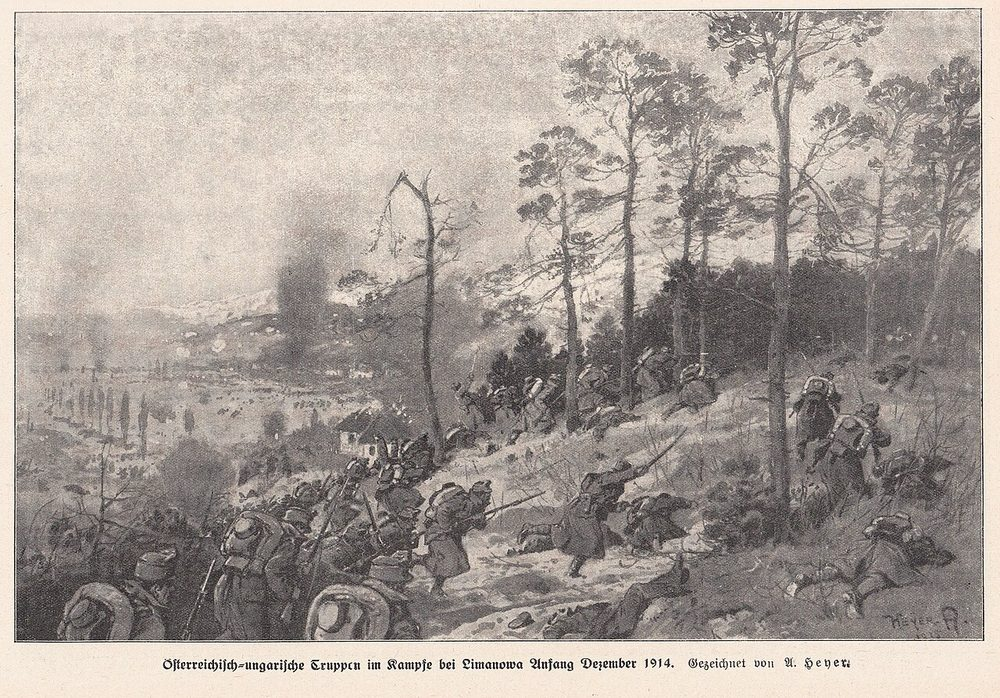

toute la paroisse · 1799–1920 · histoire inédite tirée des registres
Les soldats de l’empereur
Dès la fin du XVIIIe siècle, des fils de paysans de la paroisse ont servi dans l’armée de l’empereur d’Autriche. Les registres des décès ont gardé la trace de ceux qui sont revenus malades, de ceux que la mort a surpris loin de chez eux, et de soldats étrangers morts en traversant Dobra.
Texte traduit de l’original polonais avec l’aide de Claude. Je cite les registres dans leur langue d’origine, avec une traduction.
Après les partages de la Pologne, la paroisse se retrouva en Galicie, dans la monarchie autrichienne, et l’on commença à prendre les fils de paysans pour l’armée de l’empereur. Le service durait longtemps. Les registres des décès ne disent pas combien d’hommes de nos villages partirent à l’armée. Ils ont noté en revanche ceux qui rentrèrent malades, ceux que la mort surprit loin de chez eux, et des soldats étrangers morts en traversant Dobra.

L’armée lit les registres
Les 18 et 19 février 1799, dans les registres des décès de Jurków, de Dobra et de Półrzeczki, une main étrangère ajouta sous les actes la même formule et une signature. À Półrzeczki, c’est un lieutenant qui signa. L’armée corrigeait ses listes de conscription d’après les registres paroissiaux. Elle devait savoir lesquels des hommes étaient encore en vie.
Extrait du registre des décès de Jurków, février 1799
Rectificatio Conscriptionale Milit. fact. die 18 Feb. 799
Vérification de la liste de conscription militaire faite le 18 février 1799.
Jurków, décès 1786–1849 · cote 4268/5520 · scan 008 · voir le scan ↗
Ils rentrèrent malades
De 1833 à 1895, les registres mentionnent plus d’une vingtaine de soldats morts dans la paroisse ou près d’elle. C’étaient le plus souvent des hommes jeunes et célibataires, qui mouraient de phtisie et de pneumonie. Le prêtre notait à côté de leur nom le régiment, le bataillon et la compagnie.
- Dobra · 1833Józef Bolisęga, dit Jarosz, 21 ans, simple soldat du 3e régiment de uhlans « Archiduc Charles », 2e escadron.
- Jurków · 1838Jan Smoleń, 32 ans, soldat de la défense territoriale, la Landwehr, rattaché au régiment d’infanterie impérial-royal n° 20. Mort du typhus.
- Chyszówki · 1839Stanisław Czopek, 25 ans, simple soldat du régiment d’infanterie impérial-royal n° 57. Mort de phtisie.
- Dobra · 1844Jan Przybytek, 41 ans, de la Landwehr du régiment n° 20. On le trouva mort à Tymbark, où il fut enterré.
Le régiment qui revient le plus souvent dans les registres est le régiment d’infanterie impérial-royal n° 20. En 1847 mourut à Dobra Gustaw Antoni, qui n’avait pas encore deux ans, fils de Jan Melichar, médecin militaire de ce régiment à Nowy Sącz.
Certains revenaient au village après de longues années de service comme « invalides à brevet », c’est-à-dire munis d’un document officiel qui leur donnait droit à un petit secours. Le prêtre les inscrivait comme « patentalis invalidus ». Entre 1824 et 1899, les registres en comptent plus d’une dizaine. Jan Smoleński, de Jurków, invalide et veuf, mourut de vieillesse en 1868, à 84 ans.
Loin de chez eux
D’autres n’ont laissé qu’un document officiel. Le uhlan Jan Zawada, de Chyszówki, mourut de phtisie à l’hôpital militaire de Vienne. La nouvelle parvint à la paroisse par l’intermédiaire de la starostie impériale-royale de Limanowa (l’administration du district).
Extrait du registre des décès de Chyszówki, 9 juin 1873
Joannes Zawada miles c. r. Legionis Ulanorum coelebs … juxta Relationem C. R. Capitaneatus Limanoviensis de dto 4 Julii 873 No 3139 in Nosocomio militari Vindobonae
Jan Zawada, soldat du régiment de uhlans impérial-royal, célibataire, 26 ans. D’après la lettre de la starostie impériale-royale de Limanowa du 4 juillet 1873, n° 3139, mort à l’hôpital militaire de Vienne.
Chyszówki, décès 1853–1926 · cote 4269/5505 · scan 015 · voir le scan ↗
L’inverse arrivait aussi. Le 7 août 1855 mourut du choléra à Dobra Maciej Kozma, soldat de la 11e compagnie du régiment d’infanterie n° 51 « Archiduc Charles-Ferdinand ». Il était né en Transylvanie. Le prêtre ajouta qu’il était mort « in transitu cum cohorte », en marche avec son unité. C’était pendant ce même été du choléra dont parle l’histoire « Le médecin venu de Vienne ». En 1916, le registre de Dobra nota la mort d’un soldat de 42 ans, Jan Mariasz, né à Sieklówka Górna, près de Jasło.
La Grande Guerre
Les registres apprenaient la mort des soldats tombés pendant la Première Guerre mondiale par des lettres militaires, souvent des années plus tard. Le registre de Chyszówki contient trois actes de ce genre.
- 27 novembre 1914Józef Smoleń, né en 1890, sergent du 20e régiment d’infanterie, tomba sur la Nida. L’avis fut envoyé en mai 1919, de Nowy Sącz, par le bataillon de dépôt du 1er régiment de chasseurs de Podhale.
- 6 février 1917Stanisław Tomera, fils de Pankracy et de Katarzyna Mrozek, 19 ans, tomba à la bataille de Capotesti, en Roumanie, et y fut enterré. Il ne fut inscrit qu’en 1925.
- 4 juillet 1918Józef Smoleń, né en 1894, tirailleur du 32e régiment de tirailleurs impérial-royal, cultivateur, célibataire. L’aumônier militaire annonça en allemand : « an der ital. Front den Heldentod fand », il trouva une mort héroïque sur le front italien.

En 1920, pendant la guerre contre les bolcheviks, furent tués Jakub Sołtys, 22 ans, de Dobra, que l’aumônier militaire enterra, et Stanisław Michałek, de Chyszówki, tué dans une bataille contre l’armée bolchevique. Ils étaient désormais des soldats de la Pologne.
Degré de certitude
- CertainLes noms, les âges, les régiments et les causes de la mort des soldats cités. Lectures comparées aux scans.
- ProbableLe sens de la note de 1799 comme vérification de la liste des conscrits, et le sens des mots « patentalis invalidus ».
- À vérifierLe prénom du soldat de 1855 et son village de Transylvanie, ainsi que le lieu de la bataille de 1920, qui n’a pas pu être déchiffré.
Ce que nous ne savons pas
- Combien d’hommes de la paroisse servirent dans l’armée et combien en revinrent. Les registres ne notent que les morts.
- Combien de soldats tombés pendant la Première Guerre mondiale ne figurent pas dans les registres. Les registres de Dobra de 1914–1915 ne contiennent pas un seul acte concernant un soldat tombé.
Sources
- Registres des décès : Jurków, cote 4268/5520 (scans 008, 038) et 4268/5525 (scan 016) ; Dobra, cote 4268/5505 (scans 060, 074), 4268/5510 (scans 007, 021), 3402/5510 (scan 032) et 3402/5520 (scan 005) ; Chyszówki, cote 4269/5500 (scan 036) et 4269/5505 (scans 015, 044–047) ; Półrzeczki, cote 4269/5515 (scan 006) ; sur le site Metryki de la Société généalogique polonaise (PTG).
- « Chyszówki w księgach zmarłych 1786–1926 » (Chyszówki dans les registres des décès, 1786–1926, 2026), chapitre « Daleko od domu » (Loin de chez soi).